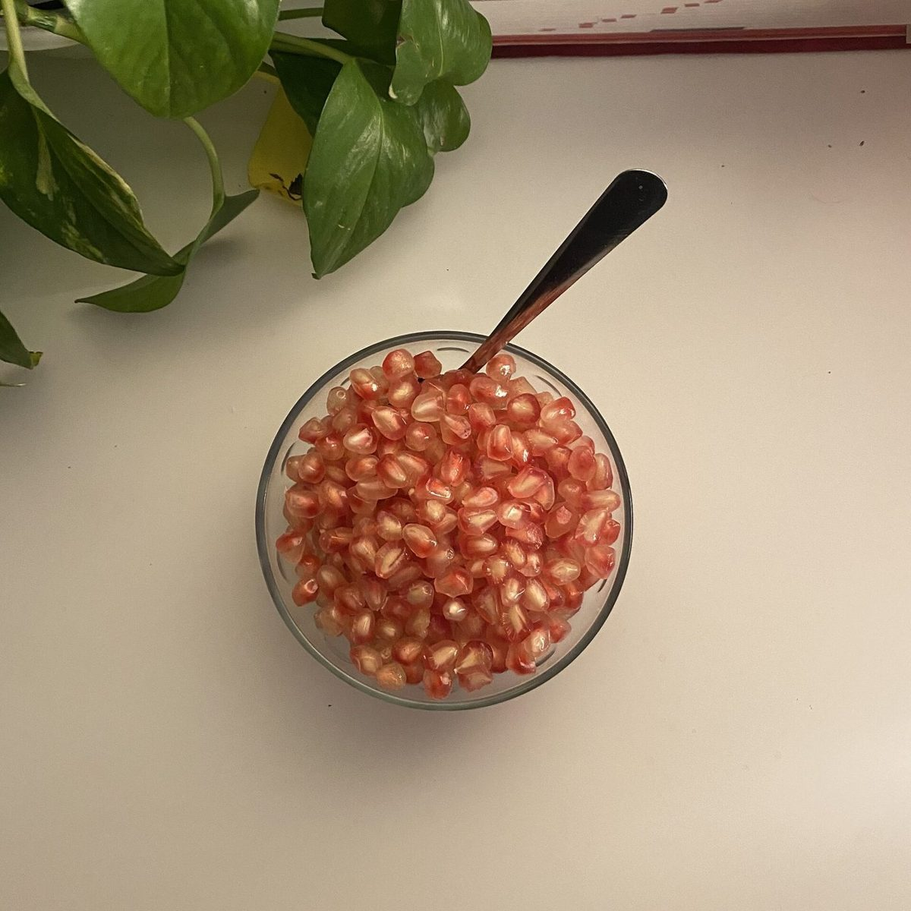
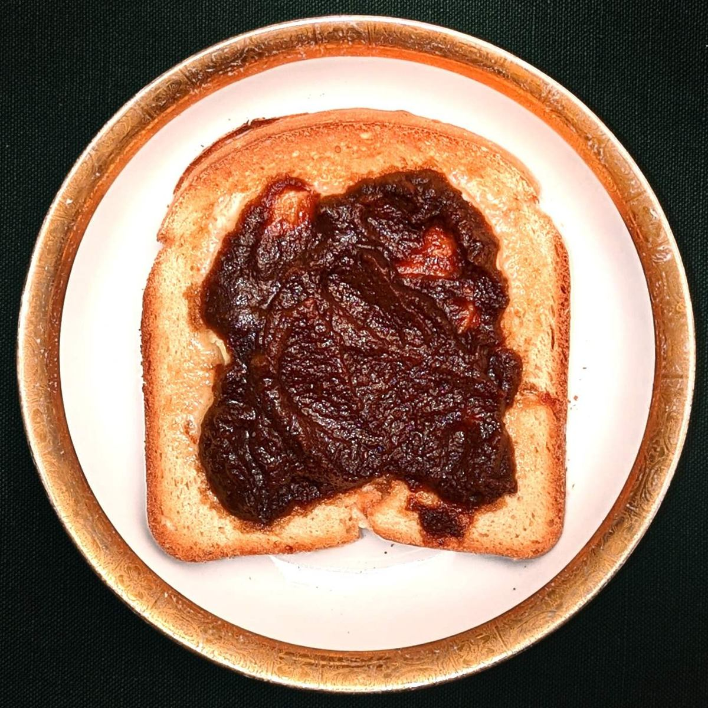
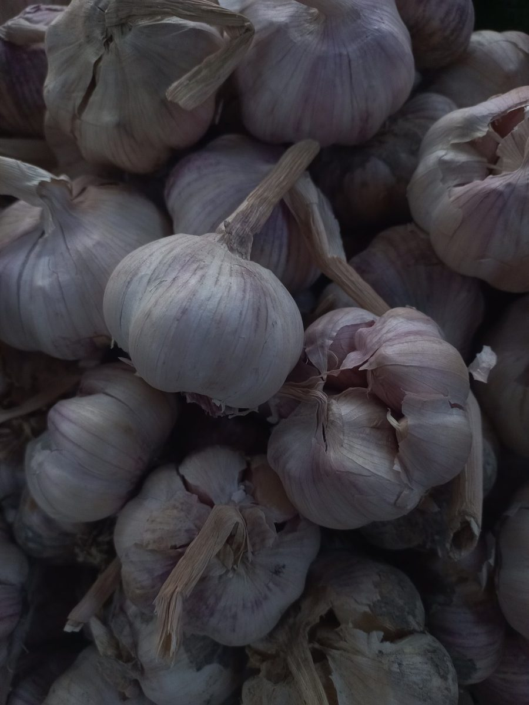

メニュー
メニューは準備中です
お品書き・価格は準備中です。下の枠は、部位の番号に合わせて制作側が用意した空の表で、メニューの内容を示すものではありません。
- 1刃先準備中
- 2ワイヤー準備中
- 3伸縮パイプ準備中
- 4固定ノブ準備中
- 5グリップ準備中
- 6引き手準備中




ギャラリー(イメージ)
食材と器の写真



写真はイメージです。お店のメニューや商品を示すものではありません。
メニュー
お品書き・価格は準備中です。下の枠は、部位の番号に合わせて制作側が用意した空の表で、メニューの内容を示すものではありません。


ギャラリー(イメージ)

写真はイメージです。お店のメニューや商品を示すものではありません。